HardWare acceleration¶
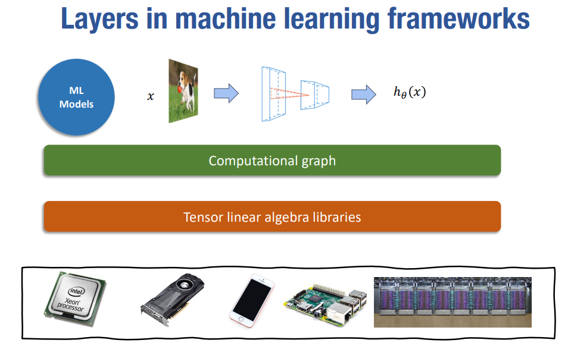
1. General acceleration techniques¶
1.1 Vectorization¶
看这段伪代码： 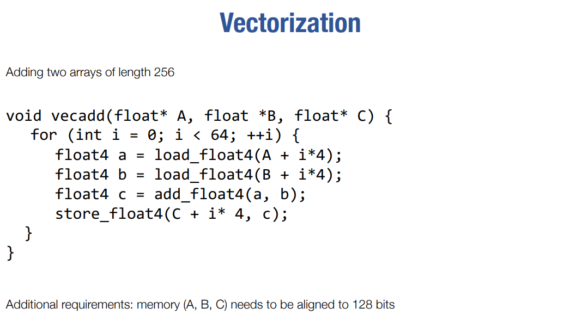 这样的操作显然是可以向量化的
1.2 Data layout and strides¶
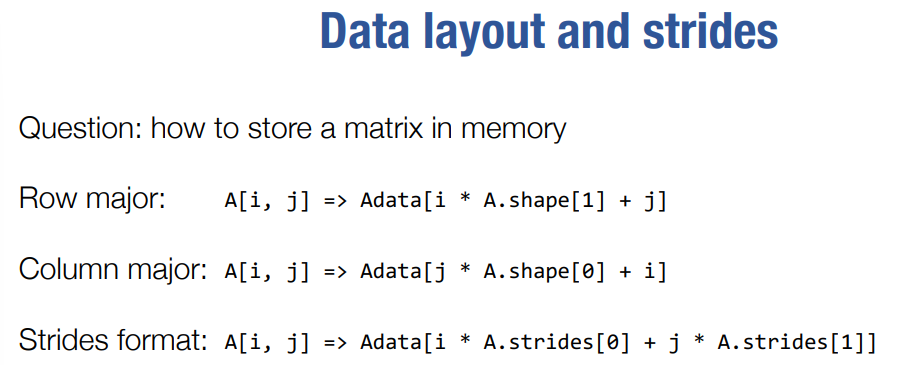
Strides format 和 row-major format 的区别：more general，可以通过设置不同维度的strides值来决定放置方式，可以表示更高维度的数据。
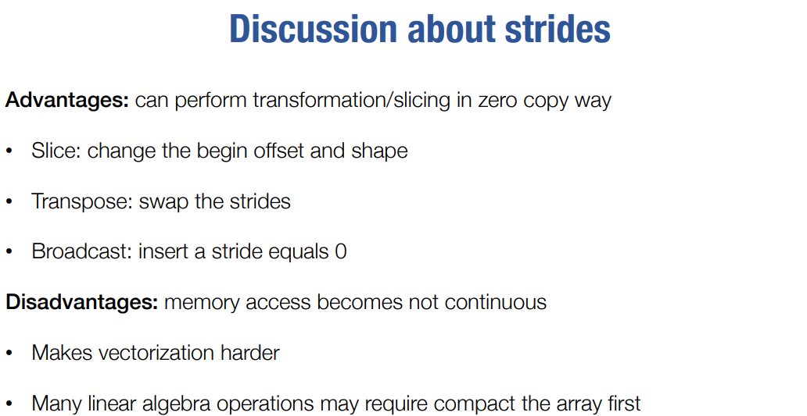
1.3 Parallelization¶
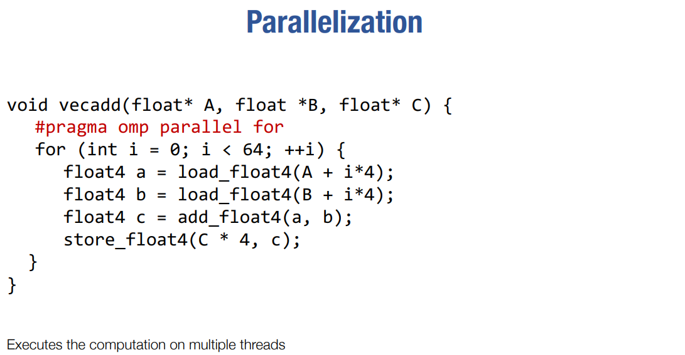
2. Case Study: matrix multiplication¶
2.1 Vanilla matrix multiplication¶
最朴素的实现方式： 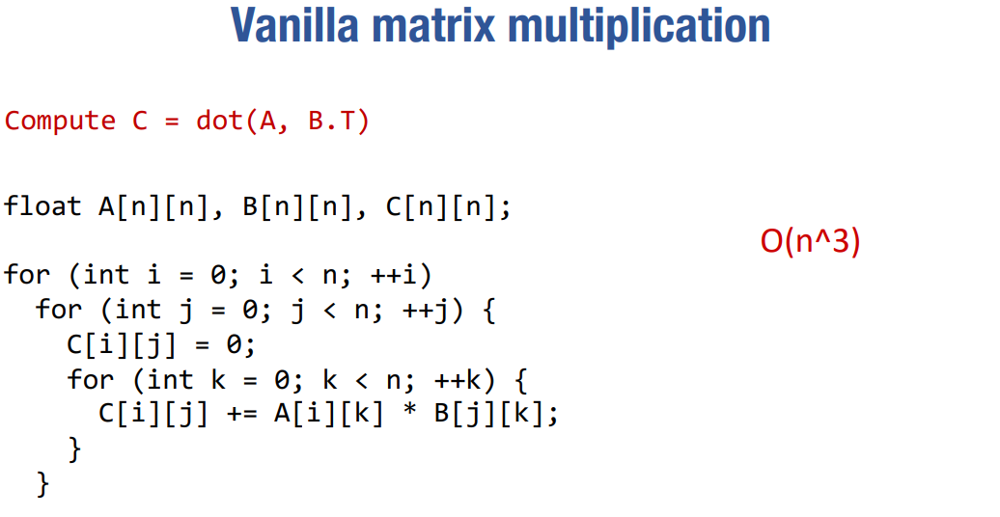
要对朴素的方式进行优化，还要考虑到Memory hierarchy: 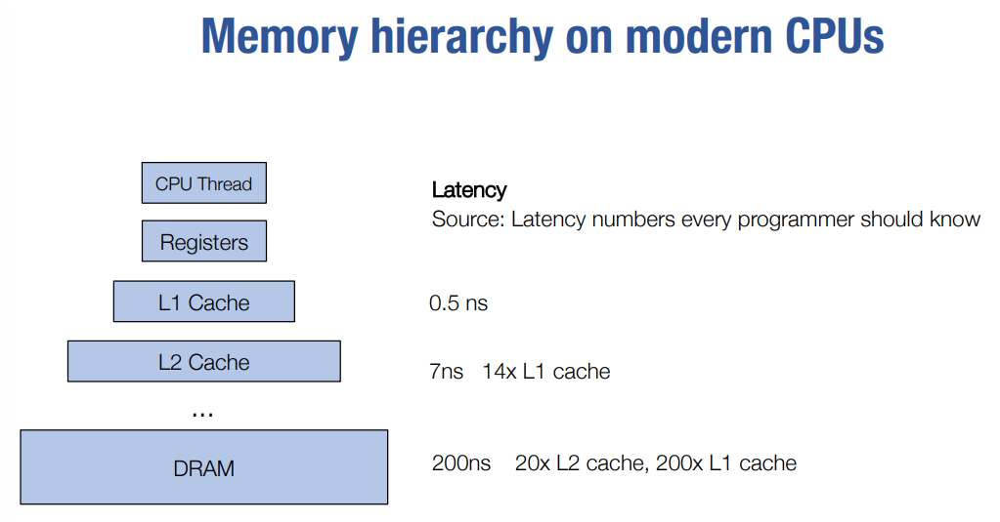
先不考虑cache，对朴素方法进行分析： 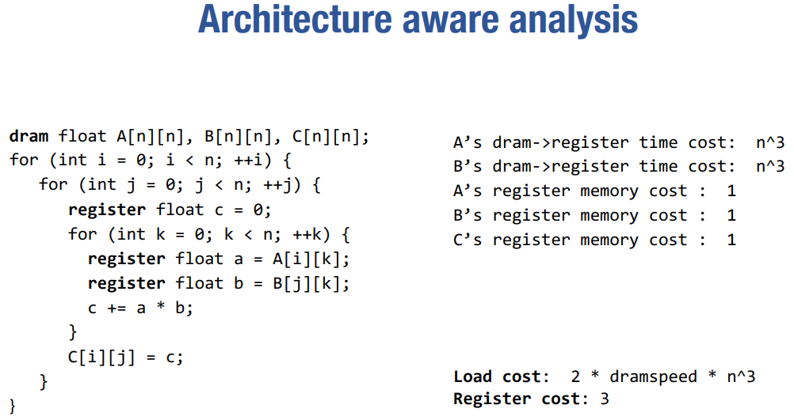
2.2 Reister tiled matrix multiplication¶
一个朴素的思想：load了，就尽可能多用几次 => 想多用，就要在下次被用之前不要被替换出去 => 所以每次计算一个可以被register/cache覆盖住的区域，这个区域就是一个tile，然后把这个tile放到register/cache里面，这样就可以多次使用了。
2.2.1 不考虑Cache¶
先不考虑Cache，只考虑寄存器：
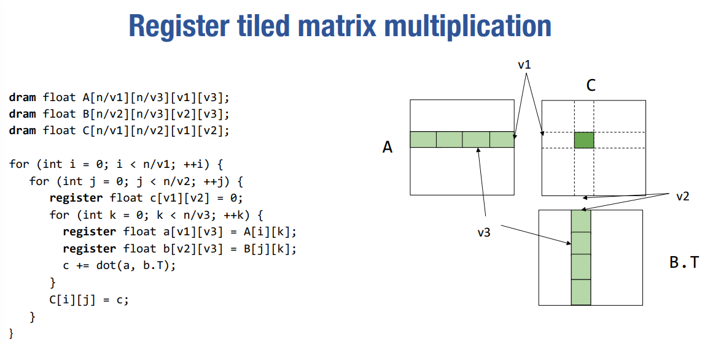
其中dot(a, b.T)的计算方法可以采取前面提的Vanilla matrix multiplication的方法。
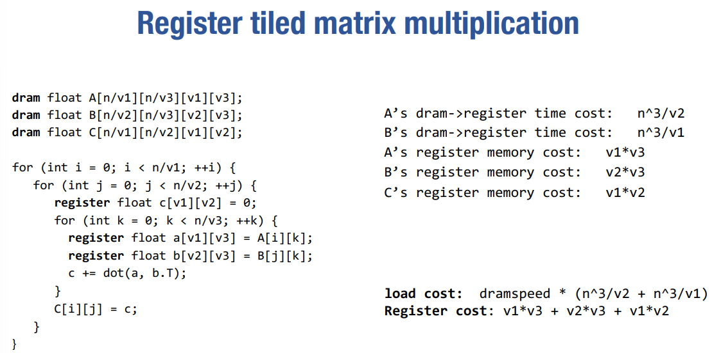
可以看到v3对load cost没有影响，为了使Register cost尽可能低，一般设置v3 = 1;
一个直观的理解：对A[i][k]的一次load，可以让里面的每股元素都参与v2次计算，所以相比每参加一次计算就要load一次的朴素方法，这种方法对A中元素的的load cost就降低了v2倍。
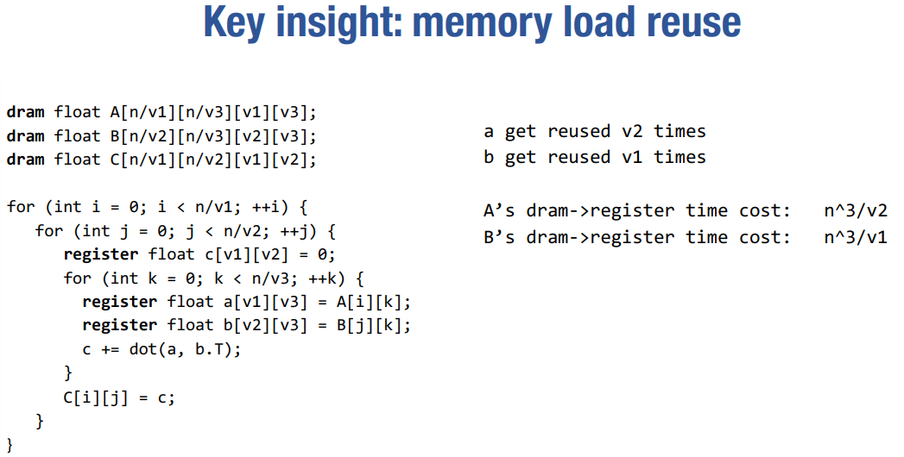
2.2.2 考虑Cache¶
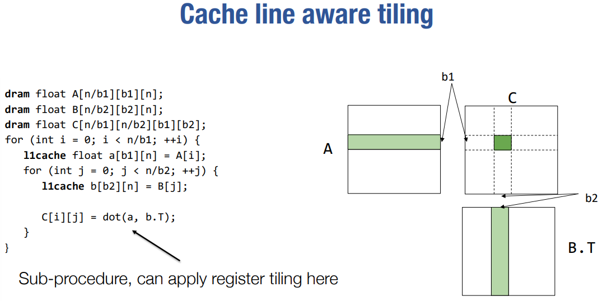
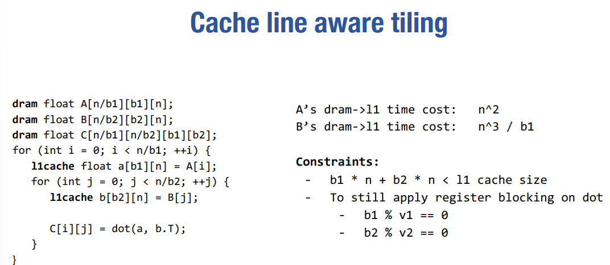 A's dram -> l1 time cost：
-
直观的想，A中的所有元素只需要被load一次即可
-
直接计算: n/b1 * b1*n B's dram -> l1 time cost：
-
直观的想，A中每load b1行，都要完整load一遍B，所以是n^3 / b1
-
直接计算：n/b1 * n/b2 * b2*n
2.2.3 Putting it togerther¶
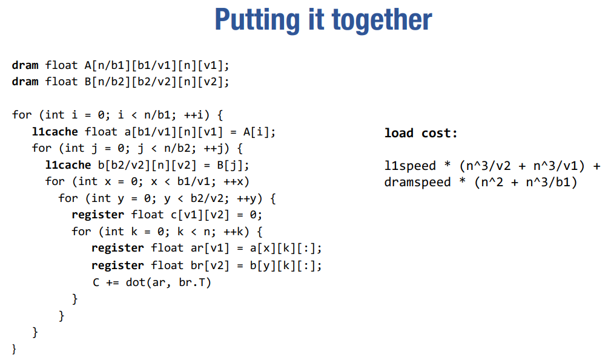
是通过reuse来节省的load次数：
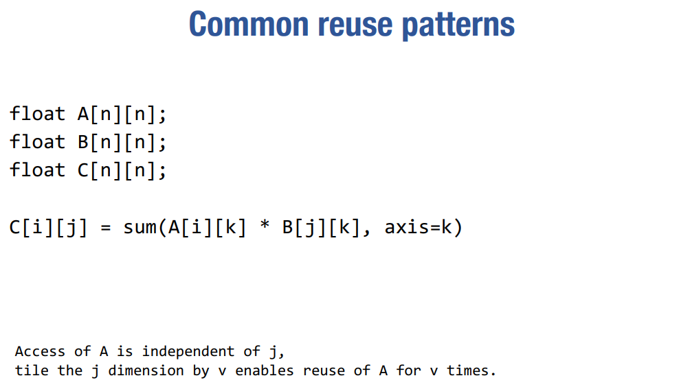
2.3 GPU Programming¶
GPU programming model： CUDA
CPU有强大的Control Unit，重点在于灵活地control，而GPU的Control Unit弱一些，不需要太多的控制逻辑，重点在于并行。
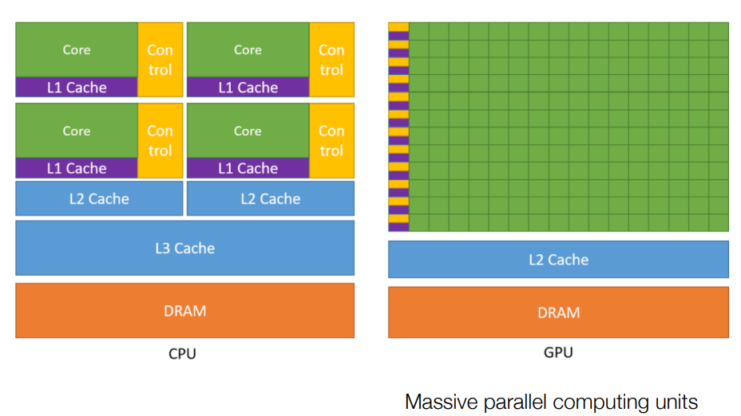
-
SIMT：每个Thread执行相同的code，但是有自己的context(thread id等)
-
Thread的组织层次：Thread -> Block -> Launch Grid
-
同一个Block中的Thread有shared memory
看一段CUDA代码：
vector add
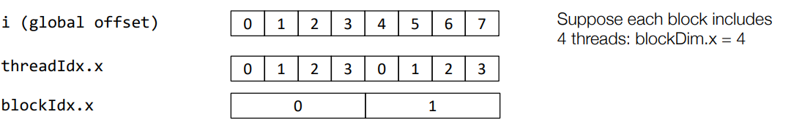
__global__ void vecAddKernel(float* A, float* B, float* C, int n) {
int i = blockDim.x * blockIdx.x + threadIdx.x;
if (i < n) {
C[i] = A[i] + B[i];
}
}
threadIdx.x: relative position of a thread within a block
blockIdx.x: relative position of a block within a grid
blockDim.x: number of threads in a block
=> i: global position of a thread within a grid
所有的Thread都会跑这段代码，但是每个Thread都有自己的threadIdx.x, blockIdx.x, blockDim.x, 所以每个Thread都会计算出自己的i，然后根据i来计算自己要做的事情。
vector add之所以可以用GPU并行，是因为每个c[i]的计算是独立的
host cpu code for vector add
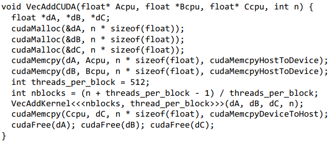 在实际场景中，GPU memory和CPU memory之间的数据交换一般会成为bottleneck，所以一般会追求“keep data in gpu memory as long as possible.”
2.4 GPU memory hierarchy¶
前面提到了Thread的组织是两层的（block, grid），这是为什么呢，因为 GPU 实际的存储层次。
在编程模型中的block可以被map到实际GPU硬件中的SMP（stream micro multiprocessor），有的时候甚至可以将多个block map到统一个SMP上。在一个SMP中，会有一个Shared memory。
编程模型中的thread可以被map到SMP中的computing core
当在host代码里调用cudaMalloc或cudaFree时，控制的都是Global memory
window sum
可以看作是一维的卷积
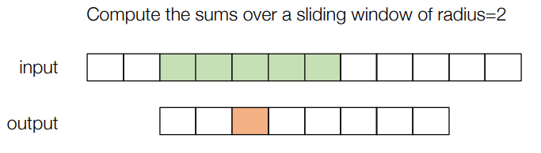
#define RADIUS 2
__global__ void WindowSumSimpleKernel(float* A, float *B, int n) {
int out_idx = blockDim.x * blockIdx.x + threadIdx.x;
if (out_idx < n) {
float sum = 0;
for (int dx = -RADIUS; dx <= RADIUS; ++dx) {
sum += A[dx + out_idx + RADIUS];
}
B[out_idx] = sum;
}
}
每个thread负责一个位置的卷积，但是每个thread都要load整个window，所以load cost是 n * (2 * RADIUS + 1)
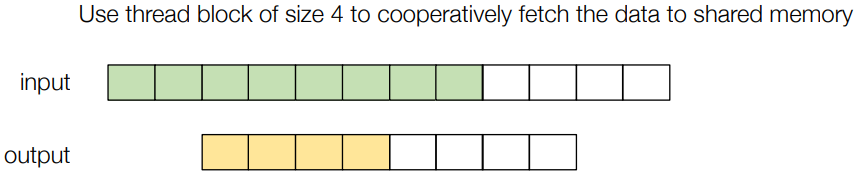
__global__ void WindowSumSharedKernel(float* A, float *B, int n) {
__shared__ float temp[THREADS_PER_BLOCK + 2 * RADIUS];
int base = blockDim.x * blockIdx.x;
int out_idx = base + threadIdx.x;
if (base + threadIdx.x < n) {
temp[threadIdx.x] = A[base + threadIdx.x];
}
if (threadIdx.x < 2 * RADIUS && base + THREADS_PER_BLOCK + threadIdx.x < n) {
temp[threadIdx.x + THREADS_PER_BLOCK] = A[base + THREADS_PER_BLOCK + threadIdx.x];
}
__syncthreads();
if (out_idx < n) {
float sum = 0;
for (int dx = -RADIUS; dx <= RADIUS; ++dx) {
sum += temp[threadIdx.x + dx + RADIUS];
}
B[out_idx] = sum;
}
}
temp，用于放置这个block所需要的输入（绿色部分）
然后block中的thread一起把绿色的部分load到temp中（上面的代码似乎有些问题？似乎只适用于图中的这个具体情形）
然后通过__syncthreads()来同步，保证每个thread都已经load完了
然后每个thread负责一个位置的卷积
这样来看，每个thread负责 (THREADS_PER_BLOCK + 2 * RADUIS) / THREADS_PER_BLOCK个元素的load，所以load cost是 (1 + 2 * RADIUS / THREADS_PER_BLOCK) * n
2.5 Case study: matrix multiplication on GPU¶
2.5.1 Thread-level: register tiling¶
要计算：C = dot(A.T, B)
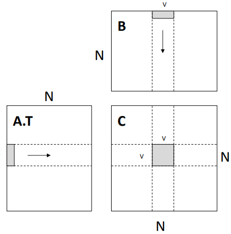
其实与2.2.1别无二致，就是取了2.2.1中的v3 = 1，此处的并行性体现在，上图中的灰色小块表示的的计算由一个thread负责
__global__ void mm(float A[N][N], float B[N][N], float C[N][N]) {
int ybase = blockIdx.y * blockDim.y + threadIdx.y;
int xbase = blockIdx.x * blockDim.x + threadIdx.x;
float c[V][V] = {0};
float a[V], b[V];
for (int k = 0; k < N; ++k) {
a[:] = A[k, ybase*V : ybase*V + V];
b[:] = B[k, xbase*V : xbase*V + V];
for (int y = 0; y < V; ++y) {
for (int x = 0; x < V; ++x) {
c[y][x] += a[y] * b[x];
}
}
}
C[ybase * V : ybase*V + V, xbase*V : xbase*V + V] = c[:];
}
Question
如何理解blockIdx.y, blockDim.y, threadIdx.y?（之前没讲过呀）
感觉是把Block也视为二维的？
2.5.2 Block-level: shared memory tiling¶
一个Block计算下图中灰色部分的计算，Block里有 (L/v) * (L/v) 个thread，每个thread负责一个灰色小块的计算
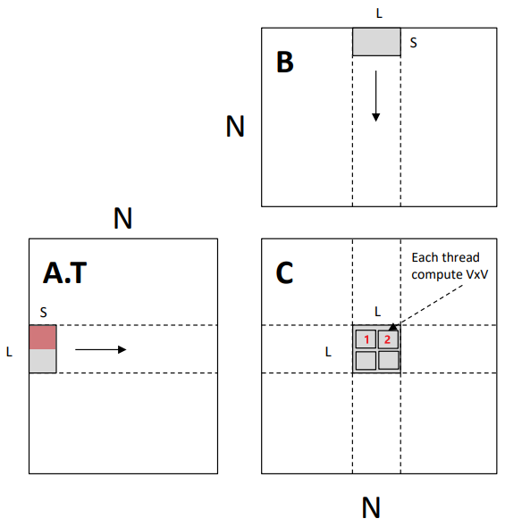
注意到，上图中的红1，红2部分的计算，都要用到A.T中同样的部分，所以可以考虑把这种多个thread都要使用的数据放到shared memory中，这样就可以减少load次数。
__global__ void mm(float A[N][N], float B[N][N], float C[N][N]) {
__shared__ float sA[S][L], sB[S][L];
float c[V][V] = {0};
float a[V], b[V];
int yblock = blockIdx.y;
int xblock = blockIdx.x;
for (int ko = 0; ko < N; ko += S) {
__syncthreads();
// needs to be implemented by thread cooperative fetching
sA[:, :] = A[k : k + S, yblock * L : yblock * L + L];
sB[:, :] = B[k : k + S, xblock * L : xblock * L + L];
__syncthreads();
for (int ki = 0; ki < S; ++ ki) {
a[:] = sA[ki, threadIdx.y * V : threadIdx.y * V + V];
b[:] = sA[ki, threadIdx.x * V : threadIdx.x * V + V];
for (int y = 0; y < V; ++y) {
for (int x = 0; x < V; ++x) {
c[y][x] += a[y] * b[x];
}
}
}
}
int ybase = blockIdx.y * blockDim.y + threadIdx.y;
int xbase = blockIdx.x * blockDim.x + threadIdx.x;
C[ybase * V : ybase*V + V, xbase*V : xbase*V + V] = c[:];
}
__syncthreads()之间的部分其实应该是所有thread协同地把数据从global memory load到shared memory中，但是这里没有给出具体的实现方法。下一小节会给出。
global memory -> shared memory: 2 * N^3 / L
shared memory -> register: 2 * N^3 / V
Note
-
每个SMP中的register是有限的，如果一个thread使用的register比较多，那么thread的总数就会减少。所以这里需要做trade off.
-
每个SMP中的shared memory也是有限的，如果一个block使用的shared memory比较多，那么SMP中可以放的block的数量就会减少。所以这里需要做trade off.
这里其实还可以考虑，某些thread在等待load 到shared memory的数据的时候，可以先context switch到别的thread上去做计算，这样可以进一步提高并行性。
2.5.3 Expand Cooperative Fetching¶
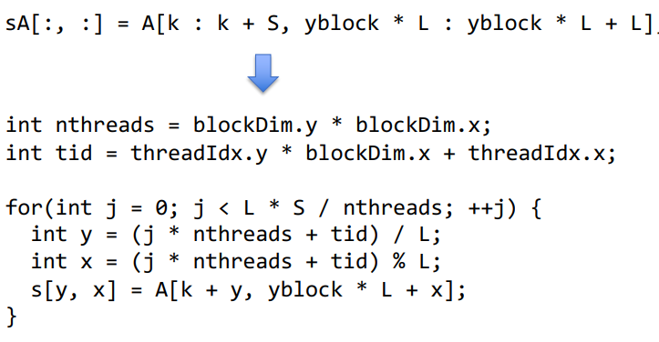
上面这段代码的大义就是 - 统共有 L * S 个元素要 load，每个thread负责load其中的 L * S / nthreads 个，所以每个thread会做一个for循环，依次将这 L * S / nthreads 个元素load到shared memory中。
- 每个thread，以自己的thread_id为初始偏移，每隔 nthreads 个元素，就load一个元素到shared memory中。
创建日期: 2023-08-10